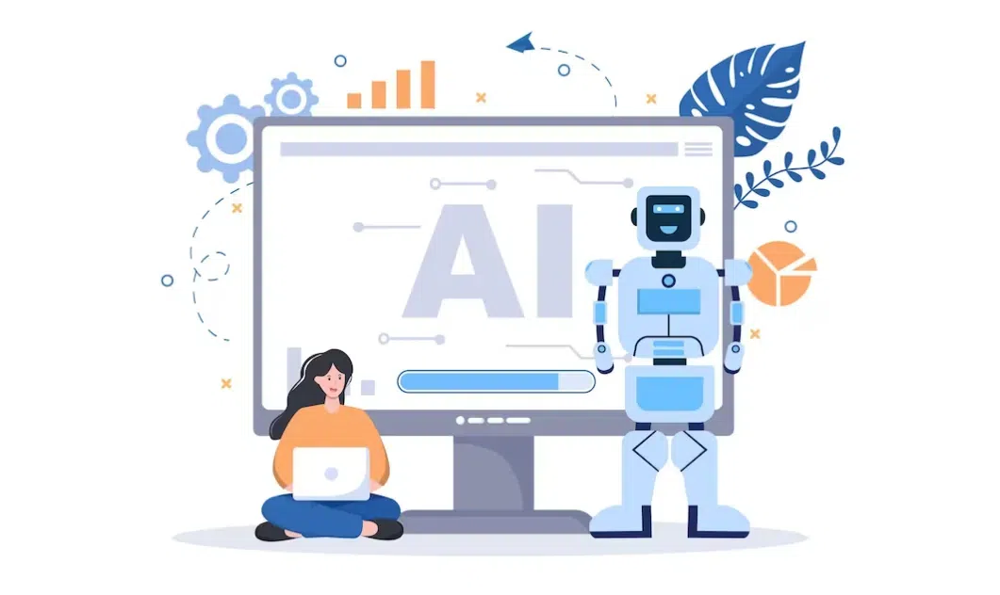
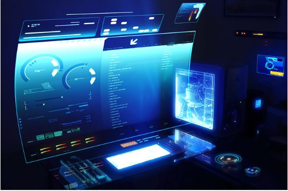

5th Generation of Computer
Fifth Generation of Computer (Present & Beyond)


Overview
Fifth generation computers focus on artificial intelligence (AI), machine learning, and natural language processing. They use very-large-scale integration (VLSI) and parallel processing, allowing millions or billions of transistors on a single chip. These computers are extremely fast, highly intelligent, and can handle complex problems that previous generations couldn’t. The goal is to create computers that can learn, reason, and make decisions like humans.
Main Features
- Technology
- Based on VLSI (Very Large Scale Integration) and ULSI for microprocessors. Uses parallel processing for high-speed computations. Designed to support AI applications, expert systems, and natural language interfaces.
- Size and Power
- Smaller than fourth-generation computers due to advanced integration. Highly energy-efficient and produces minimal heat. Can be embedded in devices, robotics, and IoT systems.
- Input & Output
- Input via keyboards, voice recognition, sensors, and cameras. Output via screens, speakers, printers, and robotic actuators.
- Memory and Storage
- Huge memory capacity using RAM, flash memory, and cloud storage. Capable of storing and accessing massive datasets quickly.
- Speed
- Extremely fast due to parallel processors and advanced microchips. Can perform billions of operations per second.
- Reliability
- Highly reliable and fault-tolerant with advanced error-checking systems. Can operate continuously for extended periods.
- Programming
- Supports AI programming languages, machine learning frameworks, and object-oriented languages. Enables development of expert systems, neural networks, and intelligent robotics.
Examples
- IBM Watson – AI system for question answering and data analysis.
- Google DeepMind / AlphaGo – AI for complex problem solving and decision-making.
- Quantum Computers (IBM, D-Wave, Google) – Experimental computers for extremely fast computation.
- Sophia the Robot – AI-powered humanoid robotics systems.
Application Areas
- Artificial Intelligence – Expert systems, virtual assistants, robotics
- Healthcare – Medical diagnostics, robotic surgery, patient monitoring
- Scientific Research – Quantum simulations, climate modeling, space exploration
- Business & Industry – Automation, predictive analytics, smart manufacturing
- Education & Communication – Intelligent tutoring systems, real-time translation, virtual classrooms
Conclusion
Fifth generation computers are intelligent, fast, and versatile. They use AI, VLSI, and parallel processing to solve complex problems that humans alone cannot manage efficiently. These computers are shaping the future of technology, robotics, medicine, and communication, moving towards machines that can learn, reason, and act autonomously.
Advancements over Fourth Generation
- Use of VLSI, ULSI, and parallel processing → faster and more powerful
- Artificial intelligence and machine learning capabilities
- Massive memory and storage for big data applications
- Highly reliable and fault-tolerant
- Applications in robotics, healthcare, space, and smart systems